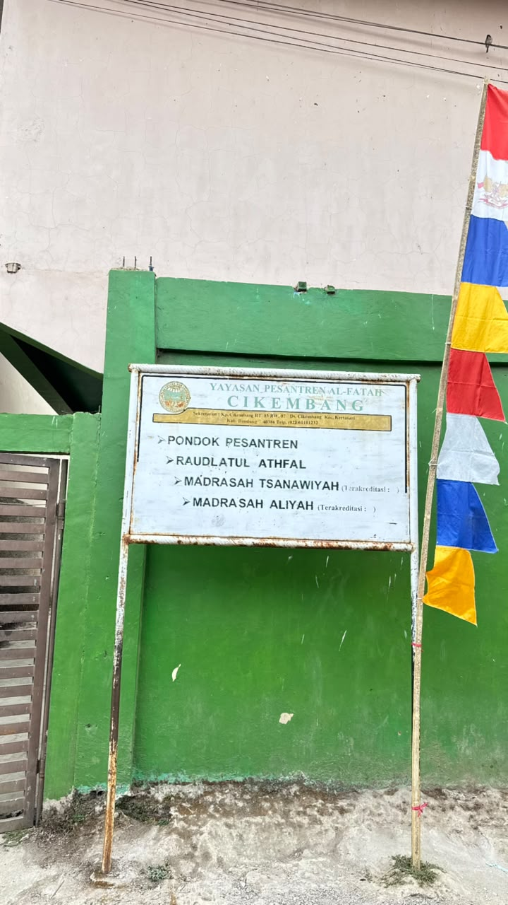
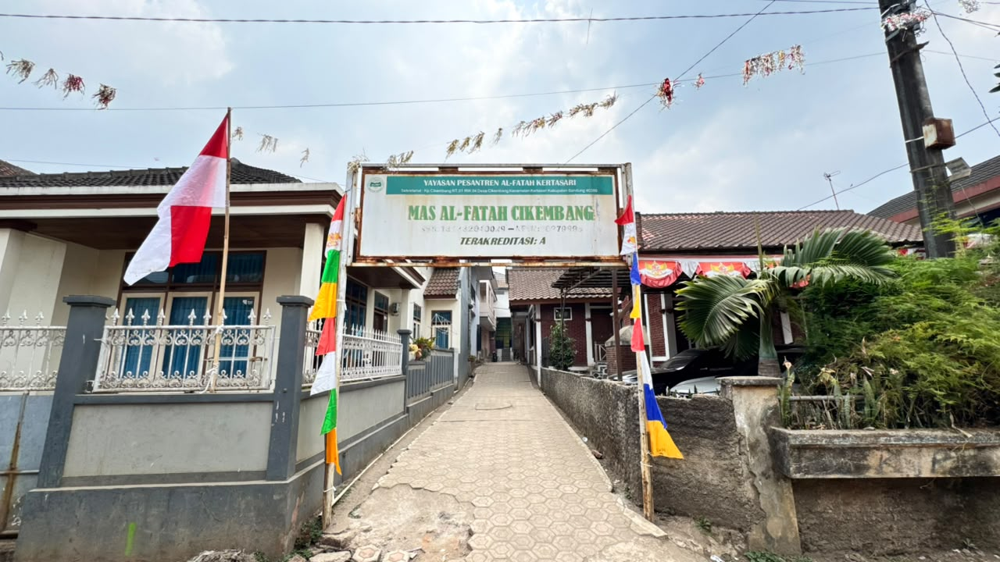
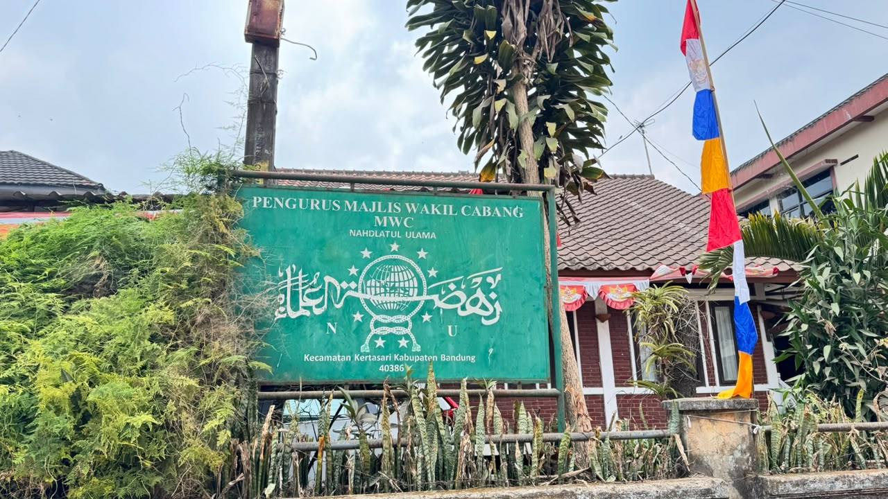
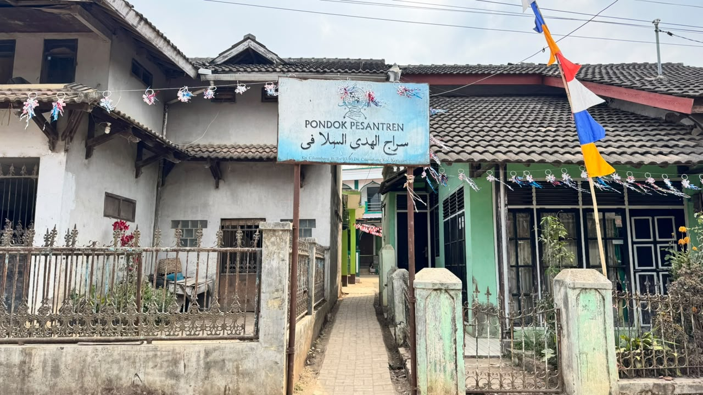
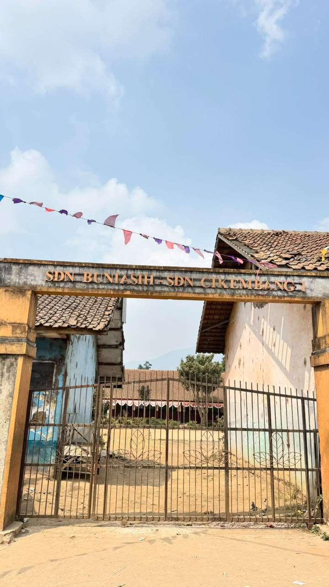
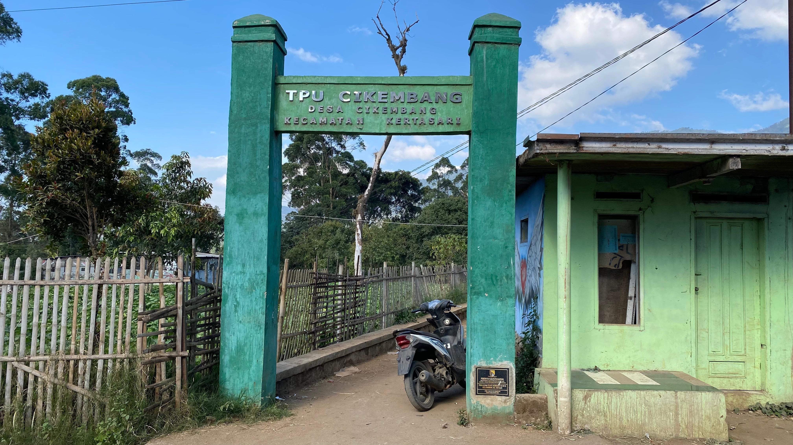
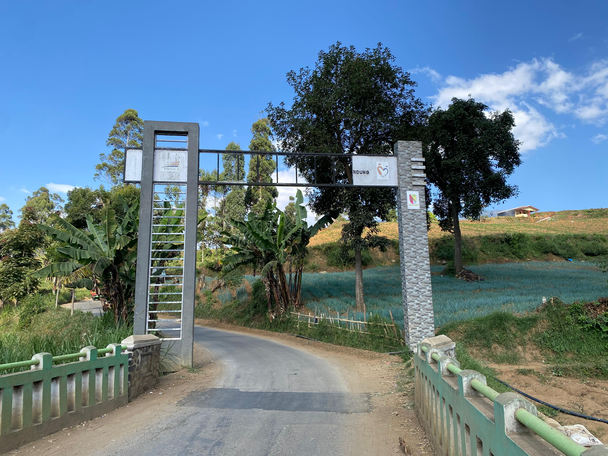
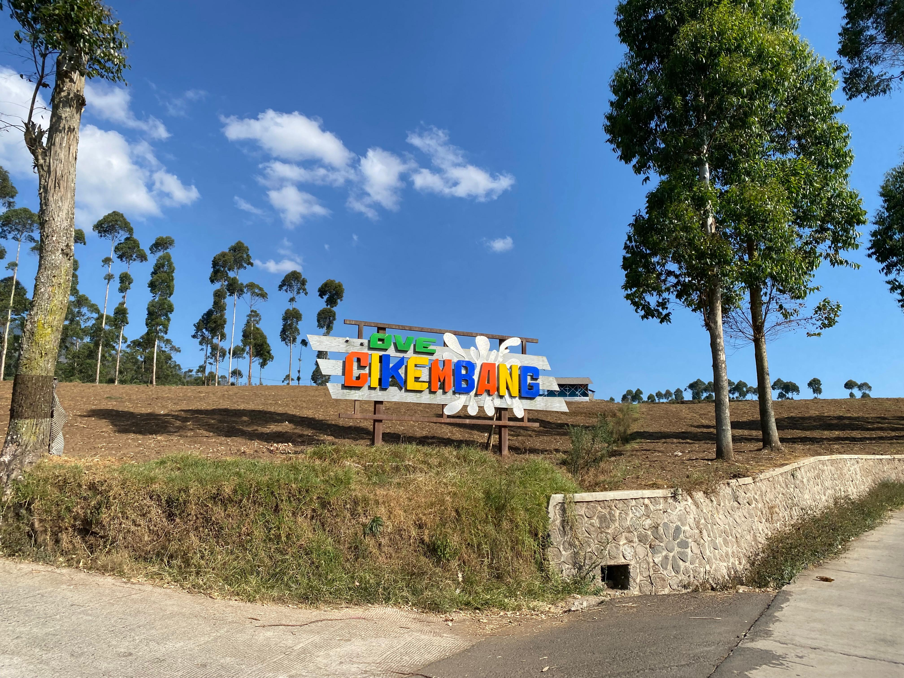
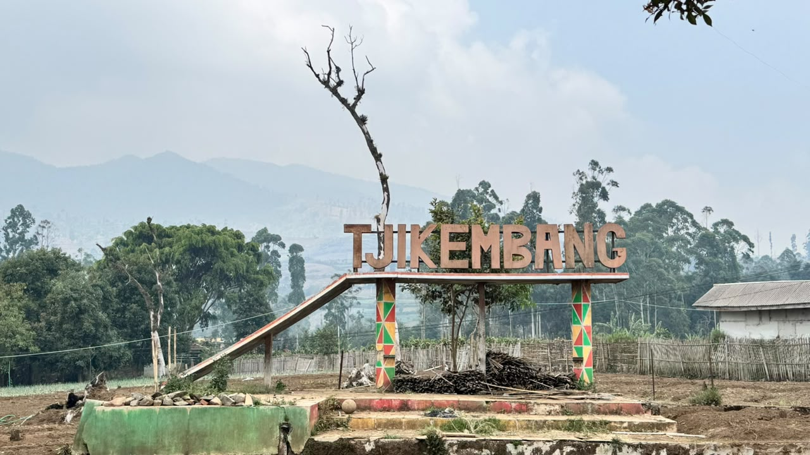

Potensi Wilayah - Dusun 2

Kantor Desa Cikembang
Pusat pemerintahan dan pelayanan administrasi bagi warga Desa Cikembang.

Sekretariat Persis Cikembang
Kantor Pimpinan Jamaah Persatuan Islam (Persis) dan Persistri Cikembang.

Stadion Cikembang
Lapangan olahraga yang menjadi pusat kegiatan sepak bola warga.

Yonif TP 333/Macan Cisanti
Area markas dan kegiatan latihan satuan TNI yang berada di wilayah Dusun 2.

Yayasan Pesantren Al-Fatah
Yayasan al-fatah yang terdiri dari Pondok Pesantren,Raudlatul Athfal, Madrasah Tsanawiyah, Madrasah Aliyah.

MAS Al-Fatah
Salah satu tempat MAN yang ada di desa cikembang.

Pengurus Majelis Wakil Cabang
Pengurus Majelis Wakil Cabang Nahdatul Ulama kecamatan Kertasari.

Yayasan Sirojul Huda
Pondok pesantren sirojul huda as-salafi yang ada di desa Cikembang.

SDN Buni Asih & SDN Cikembang 1
Sekolah dasar negeri yang menjadi pusat pendidikan anak-anak di Dusun 2.

TPU
Tempat Pemakaman Umum di Desa Cikembang.

Gapura Masuk
Gapura Masuk ke Desa Cikembang.

Ikon Cikembang
Ikon yang menjadi ciri khas ketika masuk ke desa cikembang.

Taman Cikemabang
Ikon Tjikembang yang berada di taman cikembang dusun 2.